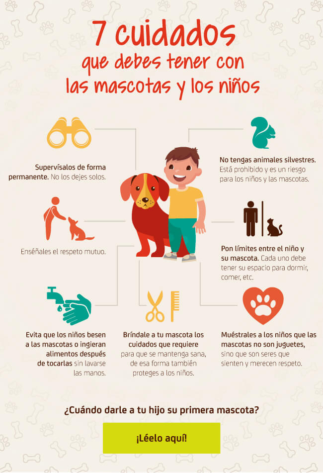

Las mascotas, como los seres humanos, requieren un espacio limpio y
cómodo en el que puedan dormir, descansar, comer, jugar y pasar su
tiempo. La zona en la que el peludito encuentra el agua y la comida
debe mantenerse libre de basuras y otras impurezas, lo mismo la que
usa para dormir
Alimenta tu mascota de forma responsable No es solo darle comida a tu
mascota cada que quiera… es alimentarla con conciencia y
responsabilidad. ¿Has visto perros y gatos que sufren de obesidad? Una
alimentación poco balanceada, con elementos que no se recomienda
incluir en su dieta, no solo podría enfermarla sino causarle problemas
de salud. Busca un concentrado que se ajuste a sus características,
con un buen nivel de nutrientes, y dáselo en las porciones
especificadas en el

¿Cuáles son las mejores croquetas?
Esa quizás es de las preguntas más difíciles que se puede responder, porque hay muchos “depende” en la respuesta. Depende de qué especie es tu mascota, qué talla (incluso raza), su estado de salud, edad e incluso su actividad. Aunado a esto hay un aspecto primordial y se trata, por su puesto, de los ingredientes. La Revista del Consumidor en su número de enero de 2016, que dedicaron a los peludos de la casa, hacen una clasificación de croquetas para perro en 4 rubros:
A esto se suma la veracidad de lo que los fabricantes declaran, por un lado ningún producto tuvo problemas sanitarios. A excepción de Grand Pet Carne Fresca todos cumplen con el contenido neto. Sólo Ke!Precio y Can Pro no cumplen con el mínimo señalado por la Association of American Feed Control Officials (AAFCO) que es algo así como la Asociación de Control de Alimentos en Estados Unidos por lo que no es oficial en México, pero resultan ser un parámetro internacional. Lo que nos pareció un poco más grave es que Dog Chaw razas medianas y granes, Nutrescan y Pro Plan Alimento completo para perros adultos no cuentan con la cantidad de proteína que dicen tener. Y es grave porque si leemos la etiqueta por lo menos tenemos consciencia de lo que les damos pero si nos mienten pues falla la nutrición.
Al alimentar a nuestras mascotas con croquetas debemos tener conciencia de que éstas se realizan a base de harinas y el orden en que presentan los ingredientes en la etiqueta es fundamental para entender la calidad de las mismas; puesto que el primer ingrediente que aparece es digamos el ingrediente principal.